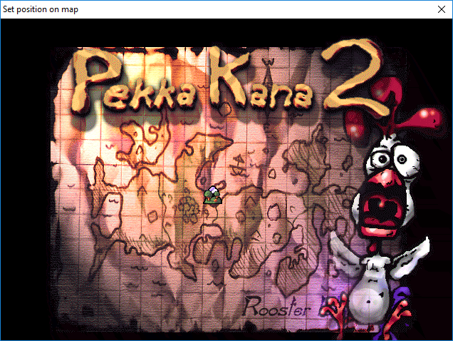
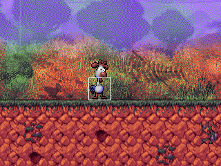

Table of contents
The aim of this editor is to have it run on modern operating systems and make it as easy as possible to make levels for Pekka Kana 2. It is supposed to get out of your way, while creating levels. Have everything important displayed clearly and be as convenient as possible. The user interface is designed with the user in mind. so that you can quickly read, or even just skim, through the manual for the most important information and get working on your custom content
Although, it is recommended to take a good look at the manual, to know of all the features, for a the best level making experience.
There is no getting started guide, because it simple isn't necessary!
Just go to File -> New Level, that's it. You can start working on your level.
Don't forget to place a "start" and an "exit" tile!
Screenshot
Here is a screenshot of the editor in action (click to open a bigger image):

Toolbar

| Figure 1: Create a new empty level. | Shortcut: CTRL + N |
| Figure 2: Open an existing level. | Shortcut: CTRL + O |
| Figure 3: Save the currently opened level. | Shortcut: CTRL + S |
| Figure 4: Save the currently opened level as... | Shortcut: CTRL + Shift + S |
| Figure 5: Test the currently opened level. (See: Test your level) | Shortcut: F5 |
| Figure 6: Select the brush tool. (See: Tools) | Shortcut: E |
| Figure 7: Select the eraser tool. (See: Tools) | Shortcut: R |
| Figure 8: Show or hide the sprites. | Shortcut: S |
| Figure 9: Toggle sprite highlighting. | Shortcut: H |
| Figure 10: Select the current layer. (See: Layers) | Shortcut: 1 - Both |
| Shortcut: 2 - Foreground | |
| Shortcut: 3 - Background | |
| Figure 11: Select the current editing mode. (See: Editing Modes) | Shortcut: CTRL + 1 - Tile mode |
| Shortcut: CTRL + 2 - Sprite mode | |
| Figure 12: Set zoom level. | Shortcut: + to zoom in |
| Shortcut: - to zoom out | |
| Figure 13: Reset zoom level. | Shortcut: None |
| Figure 14: Set the game/editor limitations (See: Modes). | Shortcut: None |
Tiles Panel
 This panel shows the tileset of the currently loaded level.
This panel shows the tileset of the currently loaded level.
You can choose a tile by clicking on it or you can choose multiple tiles at once, by pressing the left mouse button and then dragging in any direction.
The selected tile/s is/are marked by the black and white square that's surrounding it/them.
To change the tileset of the level navigate to the the Properties Panel.
The tiles have the following functions:
Note: The following list is taken from the manual of the official editor by Pistegamez. Original
Tiles 1-40:
Normal wall tiles.
Tiles 41-50:
Special wall tiles.
41: Special floor that is not displayed in the game.
Player or any other sprite can't fall through it.
42: Horizontal elevator.
43: Vertical elevator.
44: Trap wall (moves up when blue switch is pressed
45: Trap wall (moves right when green switch is pressed)
46: Trap wall (moves down when blue switch is pressed
47: Trap wall (moves left when green switch is pressed)
48: Lock wall. Lock wall vanishes when a key touches it.
All lock walls in a map will disappear if player collects all the keys.
49: Skull Switch Wall (foreground). If player hits a Skull Switch sprite,
this wall will disappear.
50: Skull Switch Wall (background). If player hits a Skull Switch sprite
a Skull Switch Wall (foreground) will appear in the foreground layer if this
wall is in the background layer.
Tiles 51-60:
Hill tiles.
Tiles 61-80:
Animated tiles. All these tiles work as walls, but tiles 61, 66, 71, and 76 are animated using the rest of the animated tiles.
Tiles 81-130:
Normal background tiles.
Tiles 131-140:
Water tiles. All these tiles work as backgrounds. They work as water only
if drawn to background layer.
Tiles 141-150:
Special tiles
141: Wind to the left. Draw in foreground layer.
142: Wind to the right Draw in foreground layer.
143: Smoke tile
144: Hideout tile (some sprites duck behind this tile)
145: Fire tile (goes out when orange switch is pressed)
146: Orange switch. Draw in foreground layer.
147: Blue switch. Draw in foreground layer.
148: Green switch. Draw in foreground layer.
149: Start tile. Every map needs one. Place in foreground layer.
150: Exit tile. Every map needs one. Place in foreground layer.
Level Panel
The Level Panel is the big one in the middle of the editor, where the background, the tiles and the sprites of the level are drawn.
It will also show your currently selected tile/s or sprite.
Depending on your selected tool you can add, erase and select, one or multiple, tiles from/to the level. (See Tools)
To add a tile to the level, navigate to the Tiles Panel, select the tile/s you want and simply press, or hold and drag, the left mouse button on the level panel.
To add a sprite, navigate to the Sprites Panel, add or select a sprite and press, or drag, on the level panel.
To remove a sprite from the level, simply press or drag on the level panel.
You have multiple options to navigate this panel.
You can scroll using the arrow keys. If this doesn't work, simply move your mouse cursor onto the level panel.
You can also move the level panel by holding down the middle mouse button and moving your mouse.
The last option is to just scroll the mouse wheel. This will scroll the level panel up and down.
You can scroll left to right by holding down ALT while scrolling the mouse wheel.
To zoom into the level panel scroll the mouse wheel up while holding CTRL, to zoom out scroll down, while holding CTRL.
Properties Panel
 In this panel you can change the properties of your level.
In this panel you can change the properties of your level.
| Name: | The name of your level, that is going to be displayed in the game. |
| Creator: | Your name, the creator of the level. |
| Tileset: | The tileset of the level. You can change it by pressing the Select button. |
| Background: | The Background of the level. You can change that by pressing the Select button, too. |
| Music: | The soundtrack that is going to be played, while playing the level. Change it by pressing Select. |
| Level nr. | The number of this level in your episode. |
| Time (sec): | The time limit of the level, in seconds. Set to zero if you don't want to have one. |
| Scrolling: | The way the level will scroll in game. (Horizontally, Vertically or both) |
| Special: | The weather effects of the level. Normal means none. |
| Icon: | The icon of your level, on the map where you choose the next level to play. |
| Position: | Set the position of your level on the level select map. (See Map positioning Dialog) |
Sprites Panel
 In the sprites panel you can add and remove sprites from/to the level.
In the sprites panel you can add and remove sprites from/to the level.
Pressing the Set Player button does that. It sets the selected sprite to the player of the level.
To know which sprite is the player, simply look at the list. The sprite where "Player?:" is set to "true" is the playable character.
You can only use a character as the player if it has the type 'character'.
All sprites are drawn on top of both layers. Only PekaED does this. The game draws the sprites behind the foreground layer, so if you want to hide a sprite
behind the foreground layer you can still do that. Sprites only show in front of the foreground in PekaED.
The shortcut to add a sprite is: CTRL + A
 The episode panel lists all the files from your currently loaded episode.(See: Episodes)
The episode panel lists all the files from your currently loaded episode.(See: Episodes)
The name of the currently loaded episode will appear next to the Episode: label.
All the files that belong to the episode will be displayed in the list, in the middle of the panel.
The Remove button removes the level from the episode. When removing an episode you are asked if you also want to delete the file from your disk.
Double clicking on one of the list entries will load that file.
To add a new file to your episode, click the Import Level button or create a new file. If you have an episode loaded PekaED will ask you if you want to add that new file to the current episode.
In legacy mode you can add up to 50 levels to your episode, in enhanced you can decide, but are still limited by your version of the game. (See: Modes)
Settings Dialog

The Settings dialog is accessible via the Extras -> Settings menu.
Path to Pekka Kana 2 is the path to the Pekka Kana 2 installation folder.
This is needed to find the games tilesets, backgrounds, music, etc. Click the "Browse" button to change it.
In the On startup section you can choose what the editor should do on startup.
| Load last episode | Load the last episode that you've worked on. |
| Create empty level | Create an empty level, with the default settings. (Tileset, background, music, etc.) |
| Enhanced Mode | Start the editor in Enhanced Mode. (See: Modes) |
| Legacy Mode | Start the editor in Legacy Mode. (See: Modes) |
Level limit per episode limits the amount of levels you can add to your episode. (See: Modes)
Map Positioning Dialog

Just click anywhere on the map, to set the position of your level on the map screen. When you're done just close the window.
If you have a custom map image, put it in the folder of your episode and PekaED will use your custom image, instead of the standard one!
Tools
Currently there are two tools available:
Brush:
If you have selected one or multiple tile/s from the Tiles Panel you can add them to your level, by pressing the left mouse button, or holding it down and dragging your mouse.
By clicking the right mouse button once you select the tile that's laying under the mouse cursor.
By holding the right mouse button and dragging you can select multiple tiles from the level or tileset.
Eraser:
Click, or hold and drag, the left mouse button to delete the underlying tile from the level.
Layers
There are 2 layers to choose from, as well as the option to select both.
| Layer: | Displays: | If selected, places tiles on: |
| Both: | Fore- and background | Fore- and background |
| Foreground: | Foreground | Foreground |
| Background: | Background | Background |
Modes
There are two modes available. These determine the limit for the amount of levels you can add to an episode.
| Legacy: | In this mode you can add up to 50 levels to an episode. This is a limitation of Pekka Kana 2. |
| Enhanced: | In the enhanced mode you can set the limit yourself. It defaults to 100. |
| Hint: If you are using the SDL port you can also use MP3 and OGG music files in your levels, when in Enhanced mode. | |
| Note: You have so set the limit to something that your version of the game can support. You can't use a higher limit than that, that's allowed by your version of Pekka Kana 2. | |
| Note: PekaED is optimized to work a specific version. Which you can find here. |
Editing modes
There are two editing modes.
| Tile Mode | In this mode you can place, select and delete tiles. |
| Sprite Mode | In this mode you can place, select and delete sprites. |
Episodes
You can create a new episode with PekaED. Simple click on File -> New Episode, enter a name and save.
PekaED automatically creates a folder in the episodes folder of your game.
To load an episode click on File -> Open Episode.
To save your episode click on File -> Save Episode.
To import an existing episode clock on File -> Import Episode.
To export your episode click on File -> Export episode.
The benefit of creating, or importing, your episode with/into PekaED is that you have an overview over all the levels and can quickly load them just by double clicking on them, in the Episode Panel.
Testing your level
If you want to test your level from within PekaED, you have to use this version.
Just set the path in the settings dialog to the location of the game folder. (See: Settings dialog)
Make sure that you save the file in an episode's folder, before testing the level. If you save it somewhere else, the testing won't work.
Highlight Sprites

If you have sprite highlighting enabled, PekaED will draw a white rectangle at the position, where it draws the sprite. These rectangles are 32 by 32 pixels and not the width and height of the actual sprite,
because the sprites are stored in an array, imagine a grid, where it saves a number for each sprite. For example at position 320, 240 is the Pekka Kana sprite. Let's say that sprites number is '1'.
So the number at position 10, 7 would be '1'. 10 and 7, because you have to divide the position by the size of the tiles. In this case 32. This is a pretty vague explanation, because it's pretty technical.
These white boxes are drawn to help you to erase sprites. If you want to erase a sprite click on that white box.
These rectangles will only show when you're in sprite mode. (See: Editing Modes)
Exporting your episode
Instead of collecting every single sprite, graphic, etc. you can simply export your episode in PekaED!
Make sure to load/import your episode first.
Now click on File -> Export episode. PekaED will prompt you to enter a name and select a place to save your episode archive. Enter a name and click Save. That's it. PekaED will collect all needed files for you and put it in a ZIP file.
Hints:
If you are using a custom "pk2stuff.bmp" file place it in your episodes folder, PekaED will take it and put it in the ZIP file, too.
You can also place a "readme.txt" file into your episodes folder. Write whatever you want into it, give credits, thanks, instructions, a story, PekaED will put it into the ZIP for you.